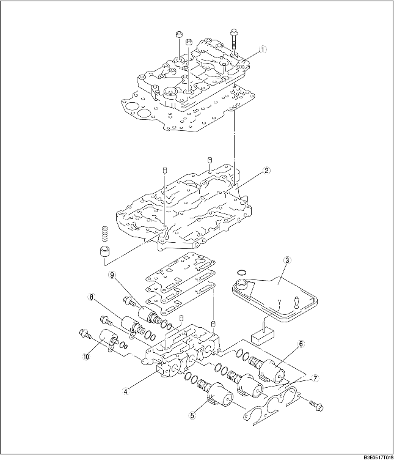

• Der Schaltkasten besteht aus drei Gehäusen: dem oberen Schaltkasten, Hauptschaltkasten und Magnetventil-Schaltkasten.
• Da der Einrückdruck für die Kupplungen elektronisch gesteuert wird, sind die Hydraulikkreise vereinfacht, die Ventiltypen reduziert und der Schaltkasten verkleinert worden.
• Das Ölsieb aus Textil-Pressfaser befindet sich im Schaltkasten, um Verschmutzungen zu verhindern.

.